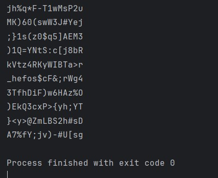
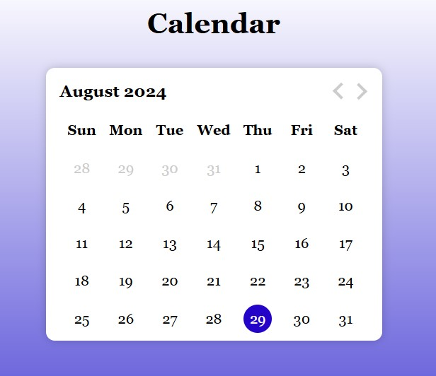
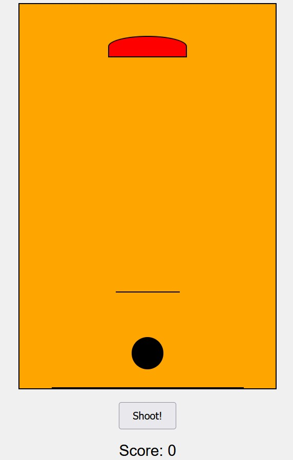
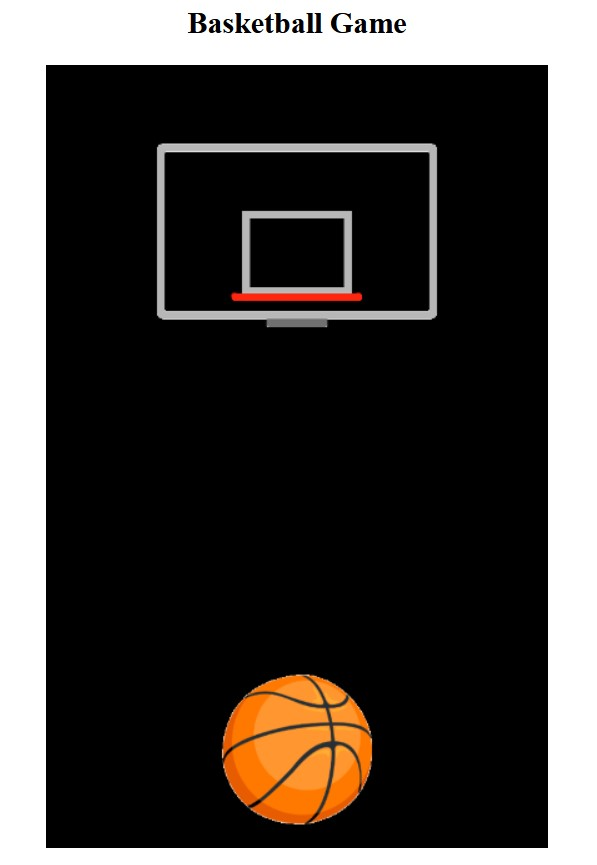

I am a dedicated Human Service Caseworker for the State of Illinois Department of Human Services,
transitioning into the technology field—an area I have always been passionate about. My
experience in casework has honed my skills in problem-solving, data analysis, and effective
communication, all of which are crucial in tech roles. These skills, along with my CompTIA
Security+ and Microsoft Azure Fundamentals (AZ-900) certifications, show my dedication to
learning and growing in the tech field. I’m excited to bring my experience into this new area
and keep expanding my knowledge as I make this career shift. I am currently learning Python, using
other programming techniques to stay informed and keep developing my knowledge.

Developed a customizable password generator using Python to create secure, random passwords tailored to user preferences. The tool allows users to specify password length and include or exclude uppercase letters, numbers, and special characters. The project highlights proficiency in Python programming, including secure randomization techniques and user input validation, and provides a practical solution for enhancing digital security.

Developed a calendar using coding techniques with AI assistance, leveraging AI tools to streamline the process. Used programming languages such as JavaScript or Python to structure and style the calendar, while AI algorithms helped automate tasks like date calculations and user interface design. This approach combined coding expertise with AI-driven enhancements to create a functional and user-friendly calendar efficiently.

Creating a basketball game with HTML and CSS showcases skills in web design and layout. HTML is used to structure the game elements, such as the court and score display, while CSS is employed to style and position these elements, creating a visually appealing game interface. This project highlights abilities in using HTML for content organization and CSS for designing a dynamic, interactive game environment, demonstrating a solid understanding of web design principles.

This is an updated example of the basketball game. Created an interactive basketball game using JavaScript, demonstrating skills in game mechanics, user interactions, and real-time updates for a dynamic and engaging experience.